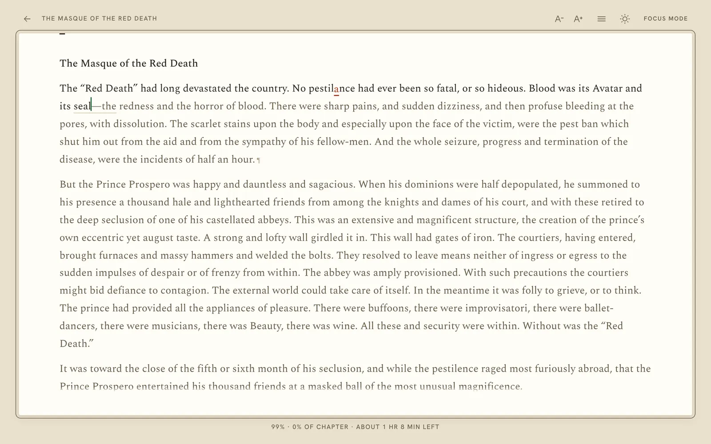
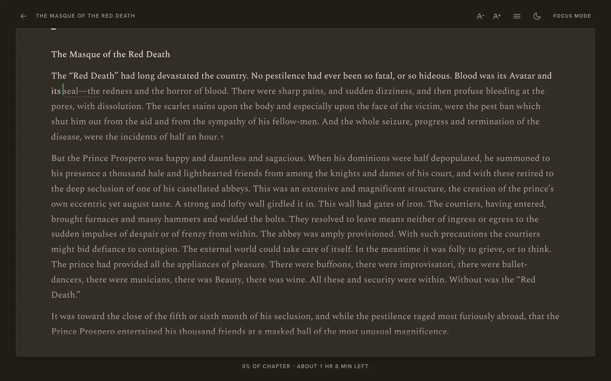
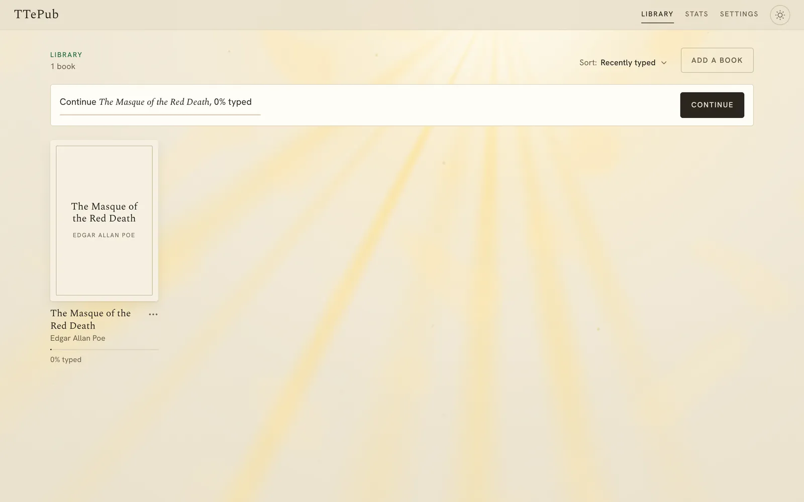
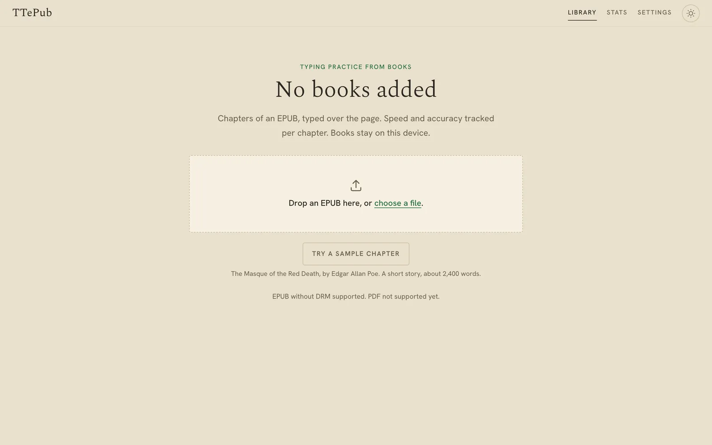

TTePub
Open appTTePub is typing practice on your own EPUBs. You drop in a book, pick a chapter and type it over the page, and it keeps your speed and accuracy for every chapter, with a score for each chapter and one for the whole book.
I got tired of typing drills. Random word lists and the same few sentences get you faster, but there is nothing to come back for. I wanted to practice on books I actually want to read, so the time spent typing also moves me through a story. Somewhere around chapter three you stop thinking about your fingers and start following the plot, and that is when the practice gets easy to keep up.

Typing a real book
The typing screen looks like a page, not a test. The chapter is laid out the way the book has it, headings, paragraphs and verse included, and you type straight over the text. Curly quotes, dashes and accented letters count for the plain keys on your keyboard, so a book's typography never trips you up. If you prefer less on screen, a Strip layout keeps three lines in focus and fades the rest.
Mistakes work two ways. Flow marks them and lets you keep going, which is the default. Strict stops at each one until you fix it. Either way the wrong letter you actually typed shows in place, so you can see what your hands did.

Scores that mean something
Every chapter gets words per minute and accuracy, and once you finish it, a score out of 100 that blends the two (120 words per minute at full accuracy is 100). Your best finished attempt is the one that counts. The book score is weighted by how much you typed in each chapter, and it stays provisional until the book is done. Time you spend away from the keys never counts against you: after five idle seconds the clock pauses.
You can stop anywhere. Your place is saved as you type, so closing the tab or reloading mid sentence puts you right back where you were. The stats page shows speed and accuracy over time, weekly totals and a heat map of the keys you miss most.

What it does
- Your own books. Drop in EPUB files, or a zip or folder full of them. Chapters are found from the book's own table of contents, with front and back matter set aside.
- A page, not a test. Type over the chapter as the book lays it out, in a Page or Strip layout, with text size and line width you can change while you type.
- Flow or Strict. Keep going past mistakes or stop at each one.
- Chapter and book scores. Speed, accuracy and a score per chapter, rolled up into a score for the book.
- Pick up where you left off. Your place is saved as you type.
- Fits the screen. The page sizes itself to your window, from a laptop to a big monitor or a tablet with a keyboard. Phones get a gentle warning, since typing a book on glass is no fun.
- Background scenes. Optional, quiet animated backgrounds: a sunny day, snow, rain, underwater or a starry night, or a new one each time with Shuffle.
- Auto theme. Light during the day and dark in the evening, or pick one.
- Offline and installable. After your first visit it works with no connection, and you can install it as an app.
How I built it
I ran it in four gates and didn't move on until I was happy with each one: a kickoff to research the hard parts and write a plan, mockups to settle the look and the words, a local build I could use for real, and only then shipping it here. The mockups are where most of the decisions got made, like the page layout being the default and the plain, neutral voice in the interface.
It is built with Vite, React and TypeScript. EPUB files are opened and parsed in a Web Worker, so a big book never freezes the page while it loads. Everything stays in your browser in IndexedDB: your books, your place and your scores. There is no account and no server, and nothing you type is sent anywhere. The sample book is a public domain edition of Poe's The Masque of the Red Death from Standard Ebooks, so there is something to type before you add your own.
